이 맥 headless Chrome 1440×900, 자동 화질, 정지 화면 10초 평균 fps(기준: 4시점 45, 3인칭 40).
| 장면 | fps |
|---|---|
| 비 첫째 시점(입구/계곡/능선/정상) | 54.0 / 53.5 / 55.6 / 54.0 |
| 눈 4시점 | 55.1 / 54.1 / 55.2 / 54.2 |
| 3인칭 비 · 눈 · 밤비 | 54.0 · 53.6 · 53.9 |
| 낮 맑음 계곡/정상 | 53.7 / 54.3 |
| 밤 계곡/정상 | 54.5 / 53.8 |
테스트 168개·빌드 통과. 접속 주소 예: ?time=17:05&weather=rain&level=heavy
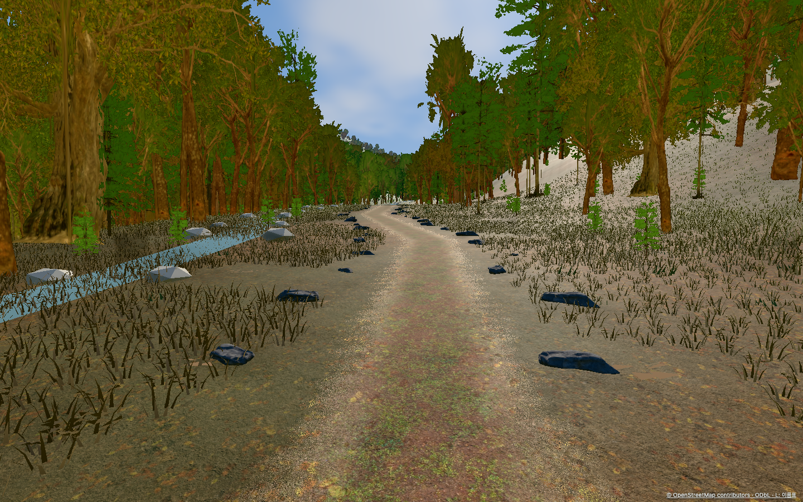
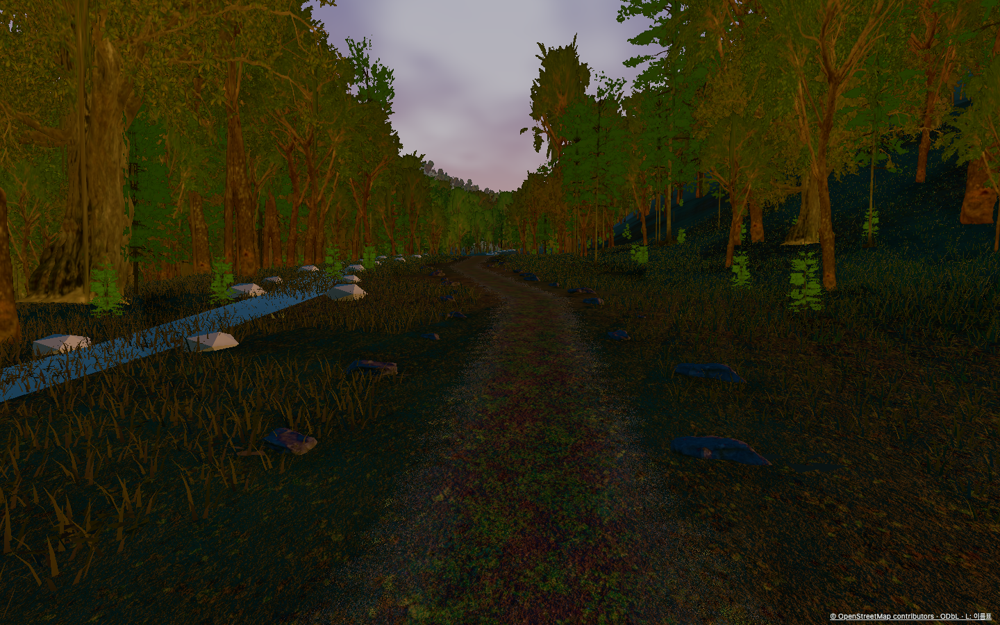
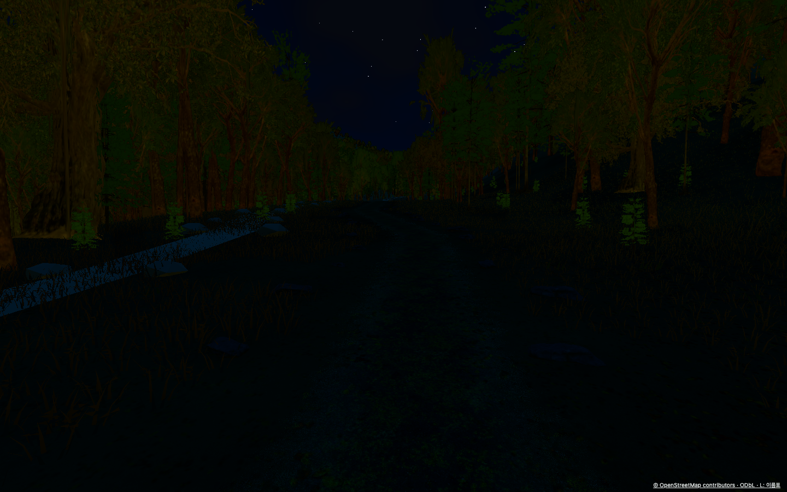
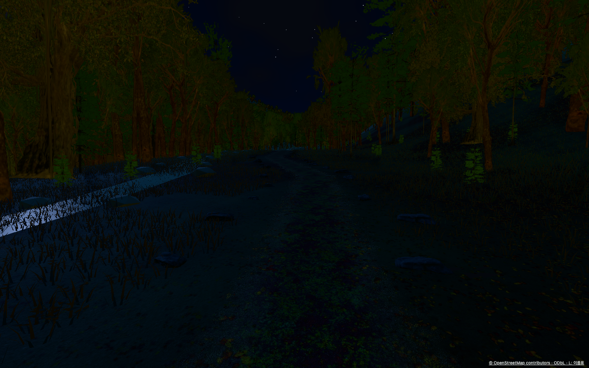
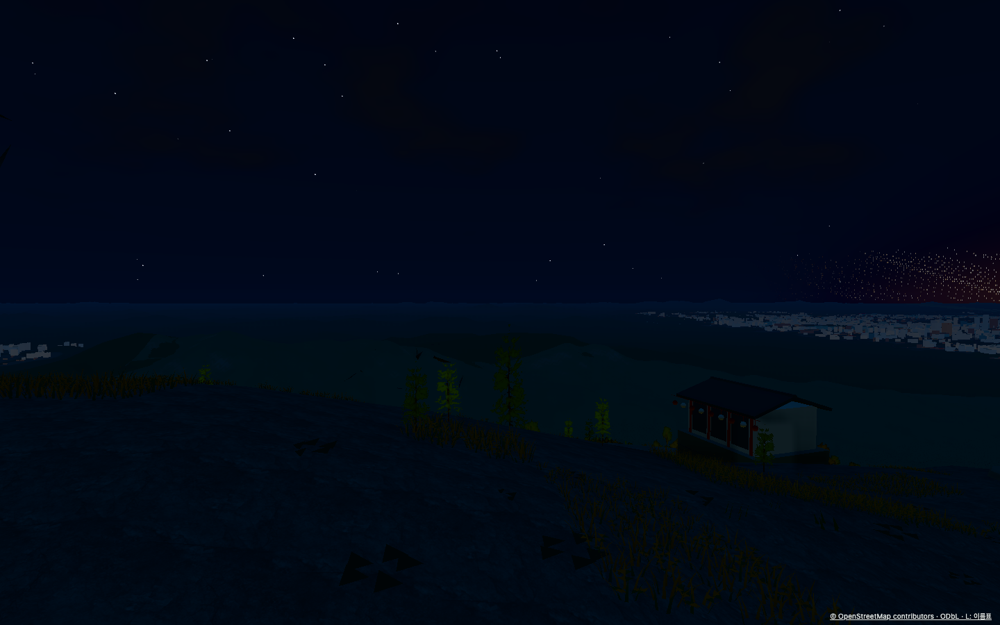
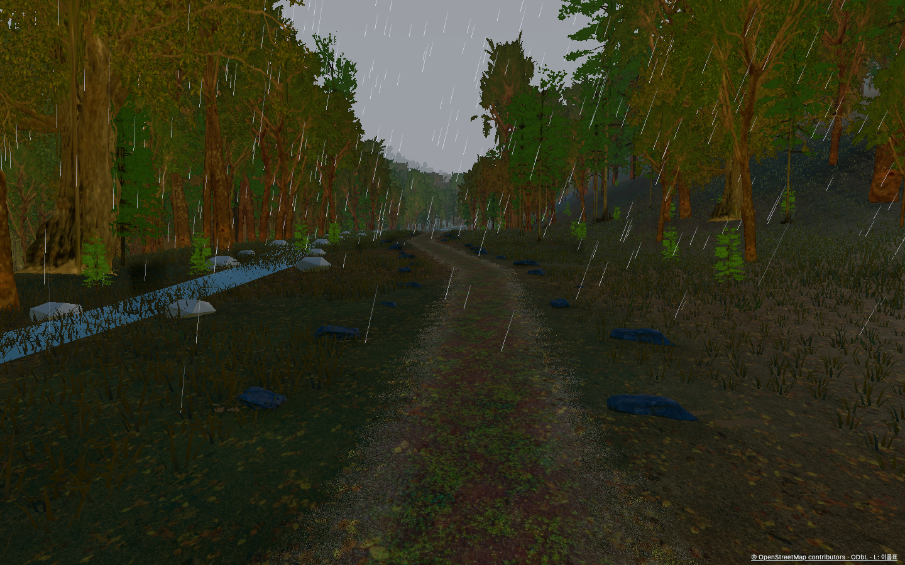
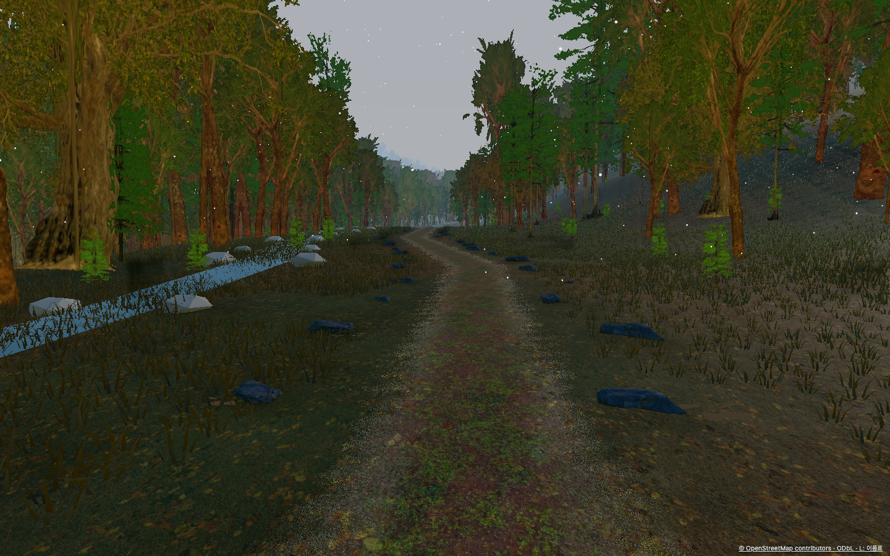
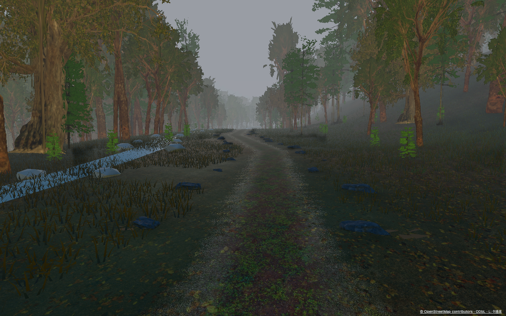
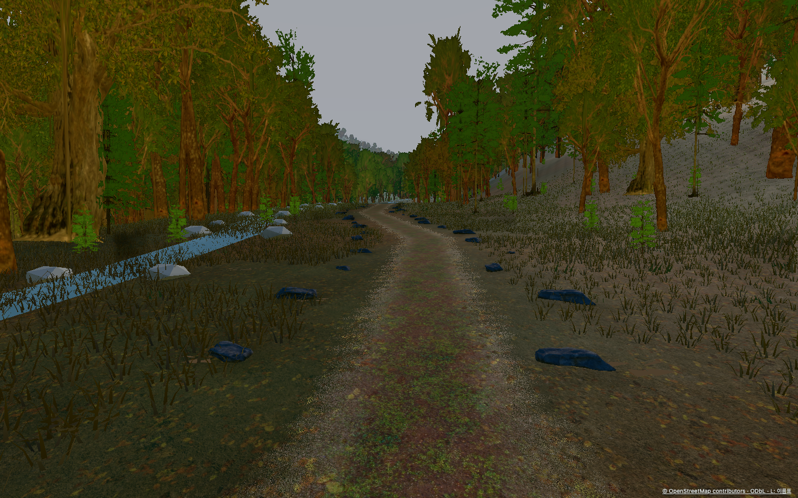
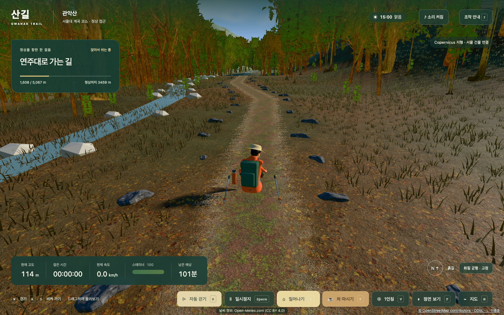
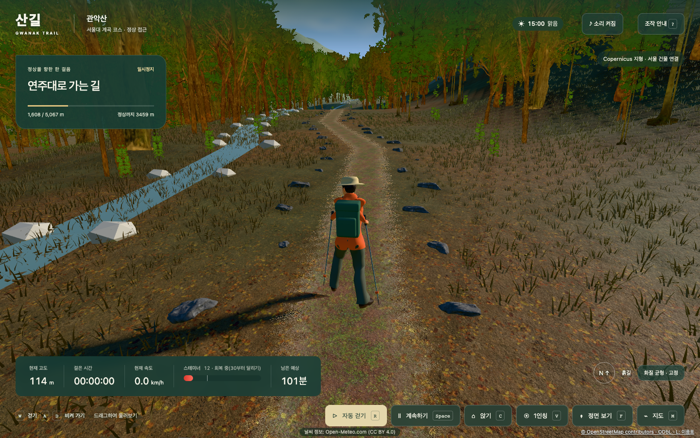
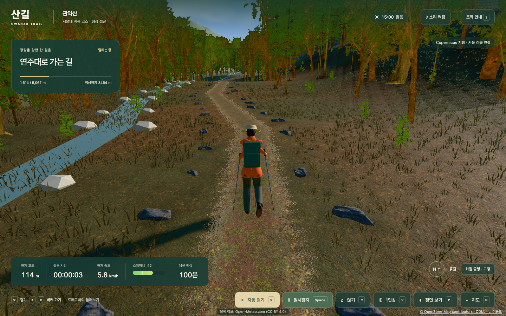
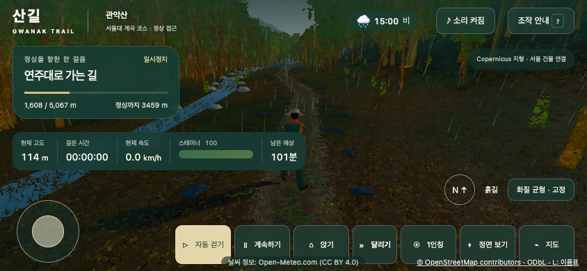